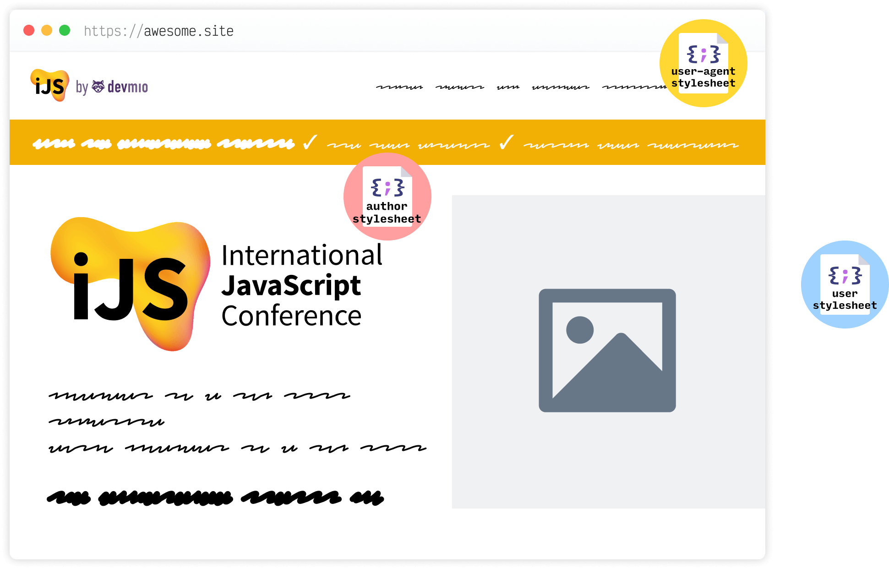
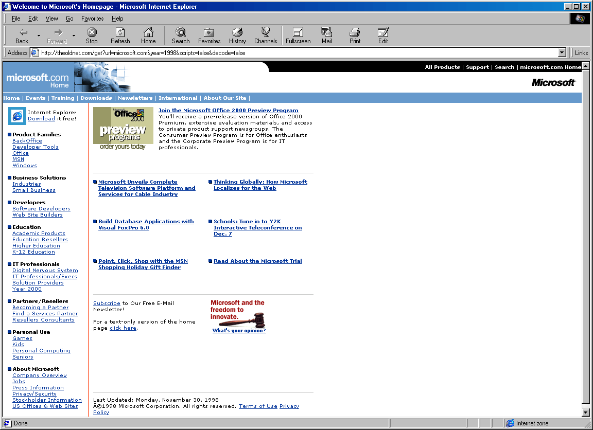
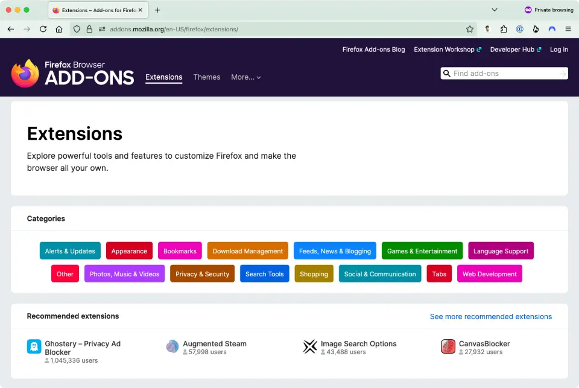
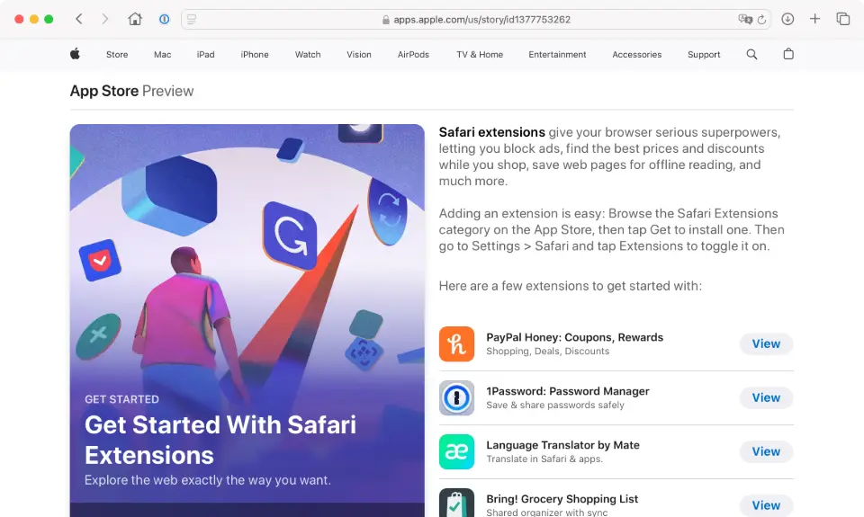
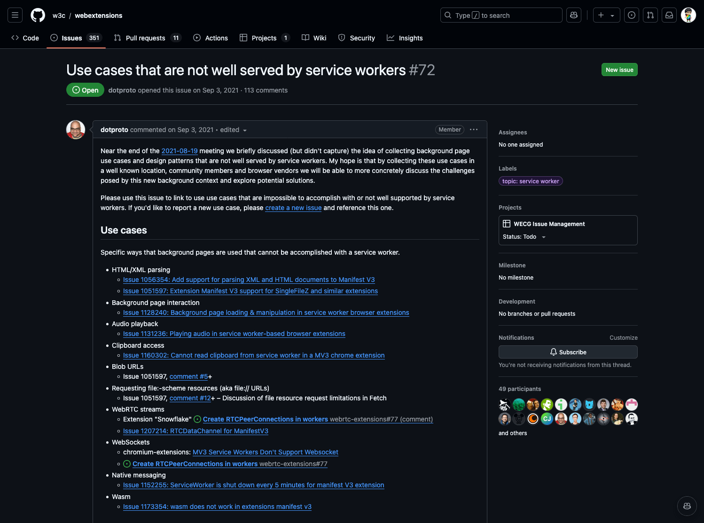
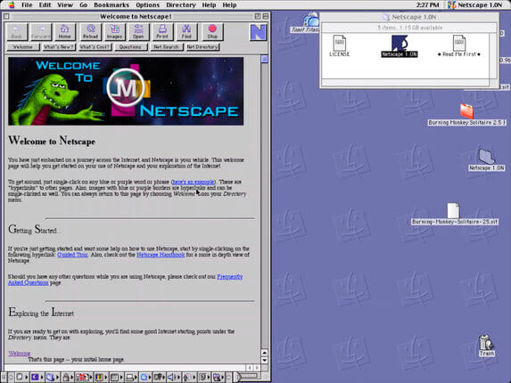
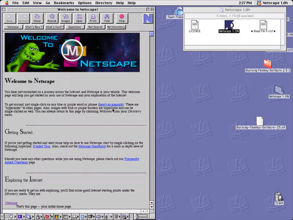
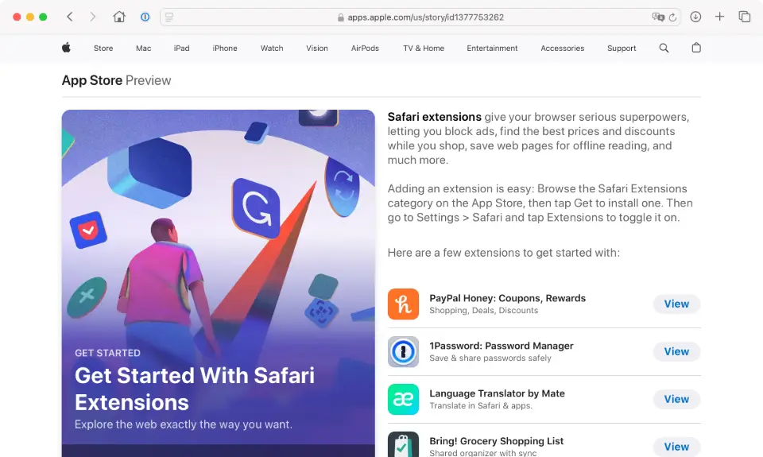
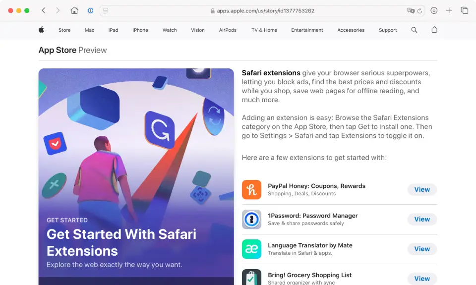

Expanding the browser experience with web extensions
By Chen Hui Jing / @huijing.bsky.social
Hello everyone at IJS! First of all, I want to express my gratitude that you chose hang out in this room for the General Web Development track to listen to me talk about web extensions when you could have been somewhere else, anywhere else, for that matter. So thank you all for being here.
🇲🇾
👾
🏀
🚲
🖌️
👟
💻
🖊️
🎙
🐈⬛
🧗
🏳️🌈
I'm always happy to speak in front of a more local crowd, local to me, that is, because then I don't have to explain my name as thoroughly. But just in case you are unfamiliar with Chinese names, this is the graphic I use to explain mine. Also, I have been on BlueSky since mid-2023 and all of a sudden in the past 3 weeks or so, it just exploded. So might as well put my link up here, I guess?
I do have a day job, because I need to pay my bills and feed myself. And the organisation who is paying my CPF at the moment is the Interledger Foundation, which is a non-profit headquartered in the US. And we are trying to connect all the various payment networks that exist in the world today, so that we can live in a world where sending a payment can be as straightforward as sending an email. That's about all I'm going to say about my day-job, but if that sounded interesting to you, feel free to come chat with me about payments. Or even better, come chat with me about CSS.
Okay, let's talk about extensions.
Extensions are meant to extend something, right? So web extensions are meant to extend browser functionality. Which is something people have been trying to do every since commercial browsers became a thing. I think it's a very human thing to want to tweak whatever we're using just a little bit more to suit our preferences or needs.
Plug-ins
I don't know how many of you remember plug-ins, but it was almost a mandatory activity to install Flash and Java on your browser back then, especially if you were the one who was “good with computers”. And if you played games, sometimes the site would ask you to install some ActiveX plugin otherwise the game wouldn't load. I'm giving my age away, aren't I?
For what it's worth, I was the token IT guy among my social circles, so the number of times I've seen this 3 billion devices run Java screen… let's just say it was a lot.
User stylesheets

§ 6.2. Cascading Origins
Each style rule has a cascade origin, which determines where it enters the cascade. CSS defines three core origins:
Author Origin: The author specifies style sheets for a source document according to the conventions of the document language.
User Origin: The user may be able to specify style information for a particular document.
User-Agent Origin: Conforming user agents must apply a default style sheet (or behave as if they did).
Another way people extended their web browser was via user-stylesheets. If you have ever read the CSS cascade specification, there are 3 core CSS origins, namely author origin, which is the CSS you and I write at our jobs. There is user-agent origin, which is the styles that are shipped with the browser. But there's also user origin, where users can specify a file that contains as stylesheet with their preferred styles.
Unfortunately, Chrome stopped supporting stylesheets in 2014. You can still do it for Firefox but it's a whole series of steps. Only Safari still allows you to define your user stylesheets via the GUI, it's under the Advanced tab in preferences.
Bookmarklets
Then there are things like bookmarklets, where you could run JavaScript on browser bookmarks. You can try it with these simple Javascript functions, they do work. But after CSP became a whole thing, the bookmarklet ecosystem sort of died down as well. Even though the specification says bookmarklets and extensibility features should be exempt from CSP restrictions, it's not that surprising that reality is not what is written in the specs.

Browser extensions became a thing back in 1999 because Internet Explorer added this feature in IE4. And these extensions allowed you to modify the browser interface, the web pages being rendered by the browser and generally running extra JavaScript on the site to add some feature or another.


Most browsers maintain their own ecosystem of extensions, and have in place numerous processes for security review because extensions have rather extensive permissions to access users' browsing data. Firefox used to implement extensions via the XML User Interface Language (XUL), which was also powering the browser's UI and thus was a more powerful mechanism for extending the browser. Eventually due to maintainability, performance and security reasons, Firefox migrated to WebExtensions in 2017.
At this point, enough of the market share now supported the standard WebExtensions API. Eventually, even Safari adopted the WebExtensions API from Safari 14 onwards. Realistically, you still need XCode to build a safari extension, but at least the API is very similar to everyone else's.
manifest.json
{
"manifest_version": 3,
"name": "Awesome Extension",
"version": "1.0.0",
}
"manifest_version", "version", and "name" are the only mandatory keys.
See manifest.json page on MDN for full list of keys
Image source: Anatomy of an extension
So enough history, let's break down what a browser extension is and how it works. The heart of an extension is the manifest.json file, which is the only mandatory file that must exist in any web extension. The manifest file contains metadata about the extension, as well as pointers to other files that make up the extension.
These other files include background scripts, sidebars, popups and options pages, extension pages, content scripts and web accessible resources. For the rest of this talk, I'll be referring to the syntax used for Manifest V3. These V3 breaking changes are, annoying to me, to say the least, but it is what it is. We'll talk about that more in a bit.
AE1: Does nothing
Folder structure:
.
└── AE1/
├── manifest.json
├── nothing.html
└── icons/
├── icon32.png
└── icon48.pngnothing.html:
<html>
<body>
<h1>Nothing</h1>
</body>
</html>Icons:
{
"manifest_version": 3,
"name": "AE1",
"version": "1.0",
"description": "This extension doesn't actually do anything",
"icons": {
"32": "icons/icon32.png",
"48": "icons/icon48.png"
},
"action": {
"default_popup": "nothing.html"
}
}
The first example here is just to get your browser to recognise that an extension exists. Our manifest.json will have the 3 mandatory keys, and we'll also add the description, icons and action keys. action replaces browser_action in V3.
Although description and icons are optional, they are required if you want to publish your extension to the Chrome Web Store. Both these values do enhance the user experience, because they give your extension a pretty icon and a proper description.
action determines how the extension looks like in your toolbar, and what clicking on it does. popup can contain any HTML content and the window will be automatically sized to fit the content. CSS and Javascript can be included by link and script elements.
about:debugging#/runtime/this-firefox
Open the about:debugging page, click the This Firefox option, click the Load Temporary Add-on button, then select any file in your extension's directory.
The extension now installs, and remains installed until you restart Firefox.
chrome://extensions
Enable Developer Mode by clicking the toggle switch next to Developer mode.
Click the Load unpacked button and select the extension directory.
If you're a frontend developer like me, you might prefer to have some visual feedback that your code has done something. To load the extension in Firefox, you'll have to load it up as a temporary add-on. The option to reload the extension after you made changes to the source is also available here. For Chrome, you'll have to enable Developer Mode before you can load the unpacked extension. As you can see, the same source works in both browsers.
AE1.1: Does a tiny something
nothing.html:
<html>
<body>
<h1>Nothing</h1>
<button>Something</button>
</body>
<style>
body { text-align: center }
</style>
<script src="nothing.js"></script>
</html>
nothing.js:
document.querySelector("button").addEventListener("click", () => {
document.querySelector("h1").style.color = "tomato";
});
Okay, let's at least make the extension do something, just to prove to ourselves that interactivity with web APIs are a thing in extensions. As mentioned earlier, action adds a button for your extension to the browser's toolbar. The popup is optional, but allows you to build out content with HTML, CSS and Javascript.
The environment in which the popup operates is isolated from the web page content loaded by the browser. In this example, nothing.js targets the extremely generic tag elements of button and h1, but this code only affects the elements in the pop-up and not anything on the web page.
Content scripts
Static declaration
Register the script using the content_scripts key in your manifest.json. This automatically loads the script on pages that match the specified pattern.
Dynamic declaration
The script is registered with the browser via the scripting.registerContentScripts() method. The difference with the static declaration method is you can add or remove content scripts at runtime.
Programatic injection
Load the script via the scripting.executeScript() method into a specific tab based on particular triggers, e.g. an user action.
But a lot of the time, we do want our extension to do something to content on the web page. So for that, we'll need to make use of content scripts, which run in the context of the browser's loaded web page. This is the only way you can access content on the page from your extension.
There are 3 ways to load an extension's content script into the web page, namely via static declaration, dynamic declaration or programmatically. These different methods allow for the widest range of use cases, whether you want the extension to modify the default experience out-the-box or based on specific triggers.
Content Script Environment
Firefox
Xray vision in Firefox
The global scope (globalThis) is composed of standard JavaScript features as usual, plus window as the prototype of the global scope.
Most DOM APIs are inherited from the page through window, through Xray vision to shield the content script from modifications by the web page.
A content script may encounter JavaScript objects from its global scope or Xray-wrapped versions from the web page.
Chrome
Isolated worlds in Chrome
An isolated world is a private execution environment that isn't accessible to the page or other extensions.
The global scope is window, and the available DOM APIs are generally independent of the web page (other than sharing the underlying DOM).
Content scripts cannot directly access JavaScript objects from the web page.
Content scripts are isolated, in the sense that it can make changes to its own JavaScript environment without conflicting with the page or other extensions' content scripts. Even though content scripts can access and change the DOM, they only see the "clean" version of the DOM that has not been modified by any JavaScript.
Firefox and Chrome handle this isolation behaviour differently. In Firefox, the concept is called Xray vision, where content scripts may encounter JavaScript objects from its own global scope or Xray-wrapped versions from the web page.
While for Chrome, there exists the concept of 3 kinds of worlds, a main world, an isolated world and a worker world. Each world has its own context, its own global variable scope and prototype chains.
Content scripts have access to a specific and limited set of extension APIs directly, but for other APIs, a form of message exchange is required, which we will briefly touch upon in the next example.
AE2: Click button, change page
Folder structure:
.
└── AE2/
├── content.css
├── content.js
├── manifest.json
├── pixel.html
├── pixel.js
├── icons/
│ ├── icon32.png
│ └── icon48.png
└── images/
├── pixel-adventure-time.png
├── pixel-cat.jpg
├── pixel-city.png
└── pixel-zen-garden.png
{
"manifest_version": 3,
"name": "AE2",
"version": "1.0",
"description": "Activate pixel art",
"icons": {
"32": "icons/icon32.png",
"48": "icons/icon48.png"
},
"permissions": ["activeTab", "scripting"],
"action": {
"default_popup": "pixel.html"
},
"web_accessible_resources": [
{
"resources": [
"images/pixel-adventure-time.png",
"images/pixel-cat.jpg",
"images/pixel-city.png",
"images/pixel-zen-garden.png"
],
"extension_ids": ["*"],
"matches": ["*://*/*"]
}
]
}
This time I want clicking a button on my extension to take over the entire page and cover it all up with some fantastic pixel art I found on the internet. For the extension to recognise and load images, they need to be declared in the manifest.json file with the web_accessible_resources key.
Because I'm going for the programmatic script injection approach, my extension would need activeTab permission, which grants the extension extra privileges for the active tab only when an user interaction occurs and the scripting permission, which is required to use methods from the scripting API.
AE2: Click button, change page
pixel.html:
<html>
<head>
<meta charset="UTF-8">
<style>
body { text-align: center }
h1 { white-space: nowrap }
button:first-of-type { margin-block-end: 0.5em }
</style>
</head>
<body>
<h1>Pixel-time</h1>
<button id="pixelate">Pixelate</button>
<button id="reset">Reset</button>
</body>
<script src="pixel.js"></script>
</html>
pixel.js:
window.browser = (function () {
return window.msBrowser || window.browser || window.chrome;
})();
let id;
browser.tabs.query({ active: true, currentWindow: true }, (tabs) => {
id = tabs[0].id;
browser.scripting.executeScript({
target: { tabId: tabs[0].id },
files: ["content.js"],
});
browser.scripting.insertCSS({
target: { tabId: tabs[0].id },
files: ["content.css"],
});
});
document.getElementById("pixelate").addEventListener("click", () => {
browser.tabs.sendMessage(id, { message: "pixelate" });
});
document.getElementById("reset").addEventListener("click", () => {
browser.tabs.sendMessage(id, { message: "reset" });
});
browser.tabs.query() is used here to obtain information about the tab we want to target, specifically, I want the tab ID, because the scripting method requires that I pass it a tab ID, which makes sense since you have to specify the target you want to inject your script into, right?
Same goes for injecting CSS. Was it possible to style the stuff I was injecting via JavaScript? Of course, it is. Should you do it that way? It's really up to you. I personally like my styles in CSS files, that's all.
So what's this sendMessage() method then? Well, because content scripts run in the context of the web page and not my extension itself, this is the way for the content script to communicate with my extension. The extension and the content scripts will listen for each other's messages and respond on the same channel.
AE2: Click button, change page
content.js:
window.browser = (function () {
return window.msBrowser || window.browser || window.chrome;
})();
function pickPixelArt(art) {
switch (art) {
case "a":
return browser.runtime.getURL("images/pixel-adventure-time.png");
case "b":
return browser.runtime.getURL("images/pixel-cat.jpg");
case "c":
return browser.runtime.getURL("images/pixel-city.png");
case "d":
return browser.runtime.getURL("images/pixel-zen-garden.png");
}
}
function pickRandomImage() {
const array = ["a", "b", "c", "d"];
let index = Math.floor(Math.random() * array.length);
let random = array[index];
return random;
}
browser.runtime.onMessage.addListener((request, sender, sendResponse) => {
if (request.message === "pixelate") {
if (!document.getElementById("pixelTime")) {
const container = document.createElement("div");
container.setAttribute("id", "pixelTime");
container.className = "pixel-time";
const pixelArt = document.createElement("img");
const url = pickPixelArt(pickRandomImage());
pixelArt.setAttribute("src", url);
container.appendChild(pixelArt);
document.body.appendChild(container);
} else {
console.log("Already pixelated");
}
}
if (request.message === "reset") {
if (document.getElementById("pixelTime")) {
document.getElementById("pixelTime").remove();
} else {
console.log("No pixels left");
}
}
});
content.css:
body:has(.pixel-time) {
overflow: hidden;
}
.pixel-time {
position: fixed;
z-index: 9999;
top: 0;
left: 0;
right: 0;
bottom: 0;
background-color: black;
display: flex;
}
.pixel-time img {
margin: auto;
width: 100%;
}
The way you access images supplied with your extension is using the runtime.getURL() method, which converts the relative path of the image into a fully-qualified URL that your browser can render properly.
And the runtime.onMessage() event is used to listen for messages. If you noticed earlier, the click handlers for my 2 buttons are sending either "pixelate" or "reset", depending on which button was clicked. So if the pixelate message comes through, my content script is going to create a container which takes over the entire page and chucks in 1 of the 4 possible pixel images at random. Reset just kills the container altogether.
Background scripts
Background scripts or a background page enable you to monitor and react to events in the browser, such as navigating to a new page, removing a bookmark, or closing a tab.
Source: MDN: Background scripts
Another type of script that is seen in web extensions are background scripts. They are meant to monitor events in the browser and react to them accordingly. For example, if you wanted to implement keyboard shortcuts for your extension, you could make use of a background script to listen for specific commands and trigger some action accordingly.
AE3: Press key, change page
manifest.json:
{
"background": {
"service_worker": "background.js",
"scripts": ["background.js"]
},
"commands": {
"_execute_action": {
"suggested_key": {
"default": "Ctrl+Shift+Y"
}
},
"pixelate": {
"suggested_key": {
"default": "Alt+A"
},
"description": "Send a 'pixelate' event to the extension"
},
"reset": {
"suggested_key": {
"default": "Ctrl+Shift+E"
},
"description": "Send a 'reset' event to the extension"
}
}
}
Now we're going to add some keyboard shortcuts to the extension. For that, we'll make use of a background script. Some of you might be thinking, why are we declaring the background.js file twice? Well, this is one of those v2-v3 Chrome-Firefox incompatability issues. If you just used the new v3 syntax service_worker alone, Firefox will yell at you saying that background.service_worker is currently disabled, and it won't even load your extension. Chrome will give you a warning, but without service_worker, whatever is in your background.js file doesn't get executed either. The solution? Just put both in there.
The Commands API lets us define commands and bind them to specific key combinations. These commands must first be declared as properties in the manifest.json file. We then listen for an onCommand event to be fired using the background script and run whatever we want to run when the correct key combination is pressed. There are 4 special shortcuts with default actions for which the onCommand event doesn't fire, and _execute_action is one of them. This shortcut acts as if the user clicked on the extension icon in the toolbar.
AE3: Press key, change page
background.js:
const API = chrome || browser;
API.tabs.onActivated.addListener((activeInfo) => {
API.tabs.get(activeInfo.tabId, function (tab) {
API.commands.onCommand.addListener((command) => {
if (command === "pixelate") {
API.tabs.sendMessage(tab.id, { message: "pixelate" });
} else if (command === "reset") {
API.tabs.sendMessage(tab.id, { message: "reset" });
}
});
});
});
In the background.js file, we make use of the onCommand.addListener to bind a handler to each of the commands listed in the manifest. As mentioned previously, the _execute_action command doesn't trigger an event, so we don't need a handler for that. Key combination pressed, command fired, send message to content script to run function.
Okay, so we can try this out on the International JS page again, load the extension up, and press Ctrl+Shift+Y to trigger my pop-up, then Alt+A to pixelate, and Ctrl+Shift+E to reset. Ctrl on Mac defaults to Cmd it seems.

https://github.com/w3c/webextensions/issues/72
This service worker thing is one of the major points of contention around manifest v3. In manifest v2, extension authors could choose whether the background script or background page is persistent or non-persistent. Persistent means that the script or page is loaded once the extension starts and only unloads after the extension is disabled or uninstalled.
Non-persistent background scripts are only loaded when they need to respond to an event and unloaded when they become idle. Background pages can stay loaded until all visible views and message ports are closed. In v3, background scripts are now service workers and there is no option for them to be persistent any more.
This is concerning for a lot of existing extensions that do things like playing audio, parsing HTML, requesting geolocation and a rather long list of others, because the service worker approach breaks them. There's an issue on GitHub tracking all of these. And it's probably something to keep in mind if you're planning to delve into the world of extension development.
Manifest v2 versus v3
v2
Extension authors have a choice on whether background scripts or a page can be persistent or non-persistent
Uses the chrome.webRequest API, a flexible API that lets extensions intercept and block or otherwise modify HTTP requests and responses
Code can be hosted remotely
Most API methods use callback functions
v3
Background scripts are run with non-persistent service workers
Uses the declarativeNetRequest API, declarative API to specify conditions and actions that describe how network requests should be handled
Support is removed for remotely hosted code and execution of arbitrary strings
Most API methods return promises
When v3 was first introduced, it was a huge thing, there was a lot of backlash and opinion pieces published. Which to summarise, is that v3 has reduced web extensions from being treated like a first-class application with their own persistent execution environment to being treated like accessories with limited privileges and reactive execution capabilities. Largely a consequence of making service workers mandatory and removing the “blocking webRequest” mechanism.
Don't cancel me, but I really don't have a strong opinion about the situation at the moment. But what I can say is that, it all still feels messy to me. I've run into tutorials that don't seem to work any more even if I take the entire extension source code wholesale and try to load it up in the browser. One example is the MDN tutorial for your second extension.
Migrate v2 to v3 😮💨
Problem:
Manifest version 2 is deprecated, and support will be removed in 2024.
See https://developer.chrome.com/docs/extensions/develop/migrate/mv2-deprecation-timeline for details.
Fix:
"manifest_version": 3
So of course I decided I was going migrate it to v3 just to get it to work, I mean, how hard could it be? There are migration instructions all over the internet, right? We-ll…let's just say left.
Okay, in all honesty, it's probably more of a me problem than anything else, but there are a number of breaking changes that took me a while to untangle and work through. So the tutorial on MDN for your second web extension is written for v2. If you try to load it in Chrome, Chrome will yell at you about deprecation timelines.
Fine, let's bump the manifest up to v3.
Migrate v2 to v3 😮💨
Problem:
Fix:
"action": { ... },
"web_accessible_resources": [
{
"resources": ["beasts/*.jpg"],
"extension_ids": ["*"],
"matches": ["*://*/*"]
}
]
Annnd your extension would even load because of syntax errors in the manifest file. We'll convert the impacted keys and values to the v3 syntax. browser_action is now action and web_accessible_resources has changed from taking in an array of paths to an array of objects that include match rules.
Migrate v2 to v3 😮💨
Problem:
Uncaught ReferenceError: browser is not defined
at choose_beast.js:100:1
Fix:
window.browser = (function () {
return window.msBrowser || window.browser || window.chrome;
})();
If only the manifest file was the only thing we needed to change. Let the errors start rolling in. The first error Chrome yells at you about will be about namespacing. So we can fix that with this selection of namespaces at the top of your JavaScript file.
Migrate v2 to v3 😮💨
Problem:
Uncaught TypeError: Cannot read properties of undefined (reading 'then')
at choose_beast.js:105:3
Fix:
/* Replace tabs.executeScript */
browser.tabs
.executeScript({ file: "/content_scripts/beastify.js" })
.then(listenForClicks)
.catch(reportExecuteScriptError);/* With scripting.executeScript */
browser.tabs.query({ active: true, currentWindow: true }, (tabs) => {
browser.scripting
.executeScript({
target: { tabId: tabs[0].id },
files: ["/content_scripts/beastify.js"],
})
.then(listenForClicks)
.catch(reportExecuteScriptError);
});
Okay, reload extension, new error. Hmm, this one seems like an issue with promises. Might as well switch over to the new API, since that's what is recommended in the migration guide. tabs.executeScript needs to be changed to scripting.executeScript.
Migrate v2 to v3 😮💨
Problem:
Error handling response: TypeError: Cannot read properties of undefined (reading 'executeScript')
at chrome-extension://lejlhkohkjhglbclhhbnbpfjmljmkmkl/popup/choose_beast.js:105:6
Fix:
"permissions": ["activeTab", "scripting"]
And Chrome says what? Chrome now says cannot read properties of undefined. And this is because you need to ask for the scripting permission before you can use any of the scripting APIs. Sure, let's update the manifest file again.
Migrate v2 to v3 😮💨
Problem:
choose_beast.js:63 Could not beastify: TypeError: browser.tabs.insertCSS is not a function
Fix:
/* Replace tabs.insertCSS */
function beastify(tabs) {
browser.tabs.insertCSS({ code: hidePage }).then(() => {
const url = beastNameToURL(e.target.textContent);
browser.tabs.sendMessage(tabs[0].id, {
command: "beastify",
beastURL: url,
});
});
}/* With scripting.insertCSS */
function beastify(tabs) {
browser.scripting.insertCSS({
target: { tabId: tabs[0].id },
css: `body > :not(.beastify-image) { display: none; }`,
})
.then(() => {
const url = beastNameToURL(e.target.textContent);
browser.tabs.sendMessage(tabs[0].id, {
command: "beastify",
beastURL: url,
});
});
}
Things are progressing. Chrome is now reminding us that tabs.insertCSS also needs to be updated to the v3 syntax, which is scripting.insertCSS and this also requires the scripting permission to work. Aren't you glad we turned it on already?
New API takes in new parameters, so instead of code, you pass in css or files. The issue I didn't bother to dig deeper into is that when I tried to assign the CSS to a variable and pass the variable through, the CSS didn't get loaded.
Migrate v2 to v3 😮💨
Problem:
Uncaught (in promise) Error: Could not establish connection. Receiving end does not exist.
Fix:
/* Add to content script */
window.browser = (function () {
return window.msBrowser || window.browser || window.chrome;
})();
For this one, the error shows up on the web page's console log because it's an issue with the content script and it's the namespacing issue all over again. So once you put in the same namespace fix as before into the content script, it finally, finally all works properly.
If I didn't lose you by now, I would like to think that you're all ready to build your own extensions to do whatever you want to your browser experience. And you can go pretty far in terms of what is possible, I mean, if you've seen some of the extensions on the web stores, some of them are pretty complicated.
https://webmonetization.org/
https://issues.chromium.org/issues/40110471
At the Interledger Foundation, we have a team that is working on a Web Monetization extension. Not sure if any of you have heard of Web Monetization before, but firstly, it's not a web3 thing. It's a new standard that we're incubating at the Web Incubator Community Group or WICG.
This proposed standard wants to allow your visitors to pay a website they are consuming an amount of their choosing with little to no user interaction. And it enables a website to automatically signal to web browsers that it can accept payments and enables web browsers to facilitate a payment.
Payment Pointers
A standardized identifier for payment accounts
Used by an account holder to share the details of their account with a counter-party
https://ilp.gatehub.net/747467740/USD
To implement web monetization on a website:
A key concept is payment pointers, which are standardized identifiers for payment accounts. Just like how your email address works as your unique identifier in the email ecosystem, payment pointers are your unique identifier for payments.
Implementing web monetization on your website involves adding a link tag with your payment pointer into the head of your website. So the next question might be, how does one get a payment pointer? Well, for now, only 2 digital wallet providers offer this capability, and SGD is not supported, yet. But essentially, if we can convince more local digital wallet providers to support payment pointers, this can become a viable alternative to ads or subscription models.
https://github.com/interledger/web-monetization-extension
We are collaborating with browser engineers to get this standard implemented in Chromium, but the speed of getting a new feature into a browser ranges from slow to slower to your toddler has already gone off to do NS already. So our next best plan is to implement our standard in the browser via an extension.
The web monetization extension is one of the open-source projects that we work on, among a number of others, so if you take a peek into our organisation's GitHub account, you basically see everything that our tech team does. We also welcome contributions and participation, if open-source is something you're into. Please feel free to poke around our code.
https://github.com/interledger/web-monetization-extension/blob/eff212733de71444ff033f131ee3e3c4f000af29/src/background/services/background.ts#L70-L73
async injectPolyfill() {
try {
await this.browser.scripting.registerContentScripts([
{
world: 'MAIN',
id: 'polyfill',
allFrames: true,
js: ['polyfill/polyfill.js'],
matches: PERMISSION_HOSTS.origins,
runAt: 'document_start',
},
]);
} catch (error) {
// Firefox <128 will throw saying world: MAIN isn't supported. So, we'll
// inject via contentScript later. Injection via contentScript is slow,
// but apart from WM detection on page-load, everything else works fine.
if (!error.message.includes(`world`)) {
this.logger.error(
`Content script execution world \`MAIN\` not supported by your browser.\n` +
`Check https://developer.mozilla.org/en-US/docs/Mozilla/Add-ons/WebExtensions/API/scripting/ExecutionWorld#browser_compatibility for browser compatibility.`,
error,
);
}
}
}
Our extension is built on React, yes you can use React to build web extensions. The standard specifies a MonetizationEvent interface that we need to define in the context of web pages for the whole thing to work.
The latest browsers support this relatively new scripting.ExecutionWorld API, and for our extension, we need to use the value MAIN because it allows us to have things defined in the page's context.
The issue is that we are supporting browsers earlier than Firefox 128, which doesn't recognise MAIN, and therefore our fallback involves injecting the script manually via content script.
https://github.com/interledger/web-monetization-extension/blob/eff212733de71444ff033f131ee3e3c4f000af29/src/content/services/contentScript.ts#L70-L74
// Todo: When Firefox has good support for `world: MAIN`, inject this directly
// via manifest.json https://bugzilla.mozilla.org/show_bug.cgi?id=1736575 and
// remove this, along with injectPolyfill from background
// See: https://github.com/interledger/web-monetization-extension/issues/607
async injectPolyfill() {
const document = this.window.document;
const script = document.createElement('script');
script.src = this.browser.runtime.getURL('polyfill/polyfill.js');
await new Promise<void>((resolve) => {
script.addEventListener('load', () => resolve(), { once: true });
document.documentElement.appendChild(script);
});
script.remove();
}Since this is Firefox, the Xray vision approach to isolation is still present, but if there is something defined in the same context, we don't actually need Xray vision. And our content script is run in a regular isolated context, so we are making use of cloning to pass content to our polyfill content script, which we then emit from MAIN context.
https://github.com/interledger/web-monetization-extension/blob/eff212733de71444ff033f131ee3e3c4f000af29/src/content/polyfill.ts#L103
window.addEventListener(
'__wm_ext_monetization',
(event: CustomEvent<MonetizationEventPayload['details']>) => {
if (!(event.target instanceof HTMLLinkElement)) return;
if (!event.target.isConnected) return;
const monetizationTag = event.target;
monetizationTag.dispatchEvent(
new MonetizationEvent('monetization', event.detail),
);
},
{ capture: true },
);
window.addEventListener(
'__wm_ext_onmonetization_attr_change',
(event: CustomEvent<{ attribute?: string }>) => {
if (!event.target) return;
const { attribute } = event.detail;
// @ts-expect-error: we're defining this now
event.target.onmonetization = attribute
? new Function(attribute).bind(event.target)
: null;
},
{ capture: true },
);Another interesting thing our extension does that is probably not that common among web extensions is how we make sure that MonetizationEvent interface gets fired on link elements. We dispatch an internal event (prefixed with __wm_ext) and listen to those events to figure out when to dispatch our MonetizationEvent. At least, this is the approach we're taking to make ensure the behaviour matches the specification.
https://webmonetization.org/
Now I totally understand if I lost you at the last 3 slides, and full disclosure, I just needed a reason to mention web monetization. If you are a web extension developer, we do welcome you to come look at the code for the extension and make suggestions if you have any. If the concept of web monetization intrigues you, then I encourage you to visit webmonetization.org which has more information about how it all works.

 



 
